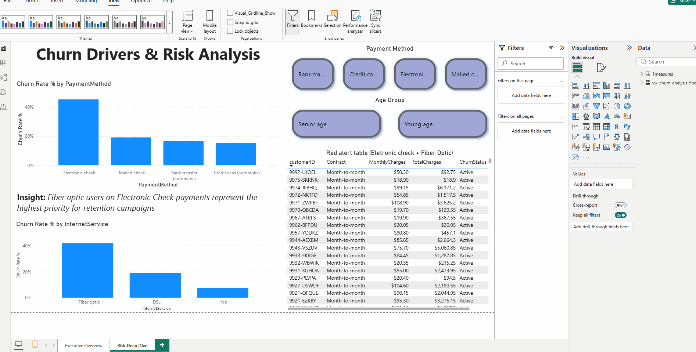

Telco Customer Churn Analysis
This project demonstrates end-to-end analytics using MySQL, SQL, Power Query, data modelling, and Power BI, with strong emphasis on data quality checks, metric validation, and trustworthy reporting — leveraging my QA background.
Business Scenario: A subscription-based telecom company is experiencing customer churn and needs to understand who is churning, why they are churning, the financial impact, and what actions can reduce churn.
Data Cleaning
Before analysis, the dataset was profiled and cleaned to ensure reliable KPIs. I checked for missing values, inconsistent categorical labels, invalid churn flags, and duplicate-like records. In Power Query, I standardised data types and normalised fields used for segmentation (contract type, payment method, tenure).In MySQL, I applied validation queries to reconcile customer counts across tables/exports and to confirm that churn metrics matched between SQL and Power BI.
This process reduced risk of misleading insights caused by data issues.
Dashboard Preview

Key Insights
- High-risk segments: Month-to-month contracts and early-tenure customers showed the highest churn propensity, indicating a critical onboarding/retention window.
- Payment behaviour: Electronic check users exhibited elevated churn compared to card/direct debit patterns, supporting targeted retention campaigns.
- Service drivers: Churn patterns varied by service mix, highlighting opportunities to improve perceived value for specific bundles.
- Revenue at risk: Estimated monthly revenue exposure by combining churn segments with recurring charges to prioritise action where impact is highest.
- Metric integrity: KPI reconciliation between MySQL outputs and Power BI measures ensured churn rate and totals remained consistent across the pipeline.
Business Analysis & Recommended Actions
-
Retention Focus: Early Tenure Window
The highest churn risk occurs early in the customer lifecycle, suggesting friction in onboarding, setup, billing understanding, or initial perceived value.
Action: Launch a 30–60 day retention program (welcome journey, proactive support, setup check-ins, and clear billing education). Track churn changes with a tenure-based cohort KPI.
-
Contract Strategy: Reduce Month-to-Month Exposure
Month-to-month customers are materially more likely to churn, limiting revenue predictability and increasing acquisition pressure.
Action: Incentivise contract upgrades (12–24 months) with targeted offers, pricing bundles, and loyalty benefits. Prioritise high-charge customers first to maximise impact.
-
Payment Optimisation: Target High-Churn Payment Methods
Churn is higher for electronic check users, which may indicate payment friction, late fees, failed payments, or lower engagement.
Action: Promote auto-pay adoption (direct debit / card) with small incentives, reminders, and simplified payment flows. Monitor churn for payment-method cohorts.
-
Service & Value: Improve Bundles for At-Risk Customers
Differences in churn by service mix suggest some customers perceive low value in their current bundle or experience feature gaps.
Action: Create “value bundles” for at-risk profiles and run A/B tests: bundle upgrade offer vs. targeted support. Measure impact with churn rate and monthly revenue retained.
Problems Addressed: Stakeholders lacked a clear, trusted churn view because metrics and definitions were inconsistent, segmentation was unclear, and data quality checks were missing. This project standardised churn logic, validated KPIs, and delivered actionable segmentation (contract, payment method, tenure groups, services) to support retention planning.
Links
-
Repository
View code, SQL scripts, and documentation
Tech Stack
-
MySQL — data storage, cleaning, transformations, validation queries
-
SQL — CTEs, CASE segmentation, aggregations, churn logic, KPI reconciliation
-
Power Query — ETL, data cleaning, standardisation, data preparation
-
Power BI — executive dashboard, churn drivers, segmentation, drilldowns
-
DAX — churn rate, revenue at risk, KPI validation, cohort measures